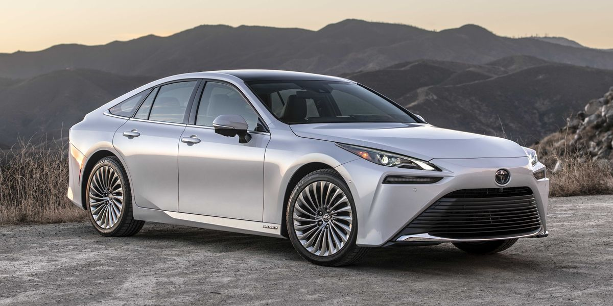
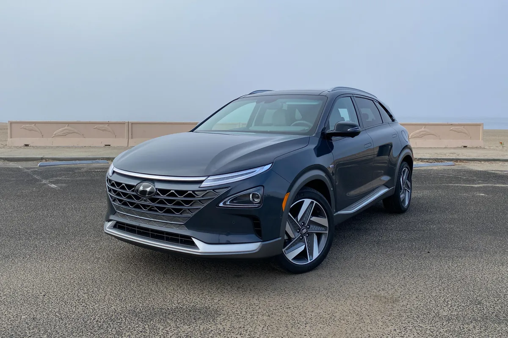
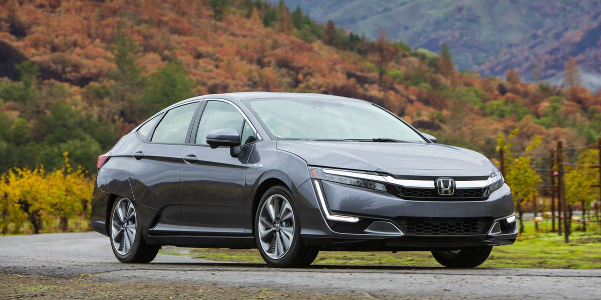
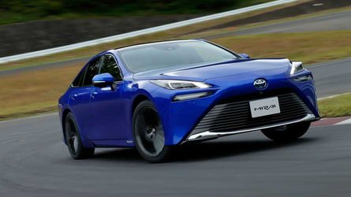

There have been multiple hydrogen fuel cell powered vehicles released over the years, like the Toyota Mirai,
Honda Clarity, Hyundai Nexo. Unfortunately, the Clarity was discontinued as of 2022 and the Hyundai Nexo
isn't as popular as the Toyota Mirai.

Toyota Mirai XLE

Hyundai Nexo

Honda Clarity
Toyota Mirai
Toyota is the most popular car manufacturer still producing a hydrogen fuel cell powered car,
with the Toyota Mirai. Honda stopped making the Clarity as of 2022 and the Hyundai Nexo hasn't sold
that well compared to the Mirai and the Clarity. The Mirai's hydrogen fuel tanks have been rigorously
tested and proven to meet Global Technical Regulation Number 13. It has a multi-patented, carbon-fiber-wrapped,
polymer-lined fuel tank that absorbs five times the crash energy of steel. If the hydrogen detectors detect a
leak or equipped vehicles with a collision sensor detect a collision, the hydrogen tank valves will automatically
close to prevent more hydrogen from escaping while any hydrogen that is leaked will safely return to the atmosphere.
The Mirai also has a 5 star Euro NCAP crash test rating, making it a very safe car. There haven't been any reports of a
Toyota Mirai explosion, but there have been hydrogen fuel cell stations that have exploded.

Toyota Mirai (Limited Trim), the most popular hydrogen fuel cell powered vehicle on the market.
Comparisons
Car
Price
Fuel Range
Toyota Mirai XLE
$49,500
400 miles
Toyota Mirai Limited
$66,000
350 miles
Hyundai Nexo Blue
$60,135
380 miles
Hyundai Nexo Blue
$63,585
354 miles
The Mirai Experience
What about the user experience of daily driving a hydrogen fuel cell powered car?
How is it living with a hydrogen fuel cell powered vehicle? According to an article from MotorTrend,
their writer, Aaron Gold, for a year and clocked in around 13k miles. He mentioned that the interior was very nice
and would pass for a Lexus model, which is for Toyota's more luxurious car models, like how Acura is Honda's more
luxurious brother. As for the range, the Mirai actually underdelivers on range. The Mirai is supposed to get 402 miles,
but he would only get around 330 miles a tank. This is because the hydrogen fuel stations don't fill the tank all the
way, unlike a gasoline/diesel engine where you can top off the tank. As mentioned before, the hydrogen infrastructure
is very sparse, with most of the stations being in the city. It should be getting better, though. The Hyundai Nexo
isn't selling as much as the Mirai, but it's still another hydrogen car on the market, meaning that there will be
more people purchasing and driving either the Hyundai Nexo or the Toyota Mirai. At the time of this article, it cost
them around $3,000 dollars for a year's worth of gas in the Mirai. The gas powered car they used, 2020 Hyundai Sonata,
cost them around $2,700 dollars for the year, but the catch is, the Mirai comes with a $15,000 prepaid hydrogen station
fuel card, meaning they could get around 5 years of free hydrogen. As for servicing, there are only a few Toyota
dealerships that do service for the Mirai. In conclusion, the Toyota Mirai is a good car, but the problem lies within
the hydrogen infrastructure. More hydrogen stations need to open, and not just in the city.